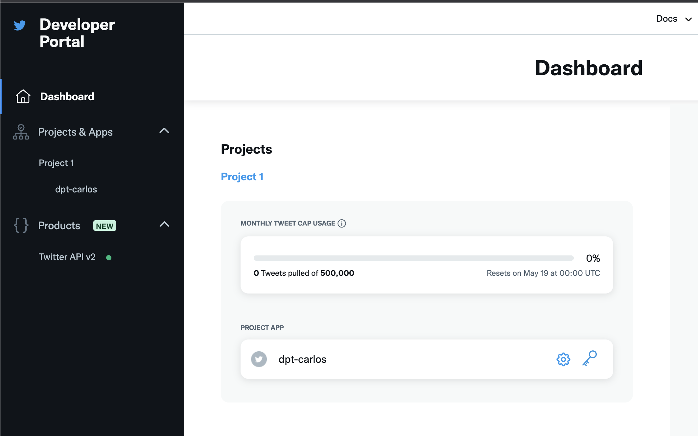
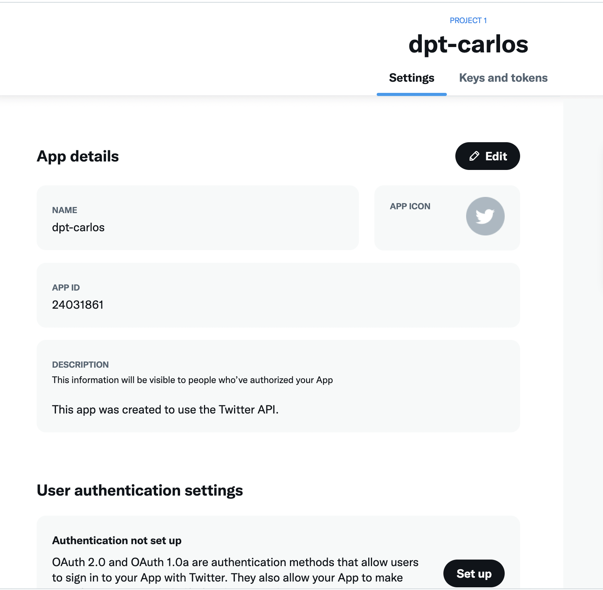
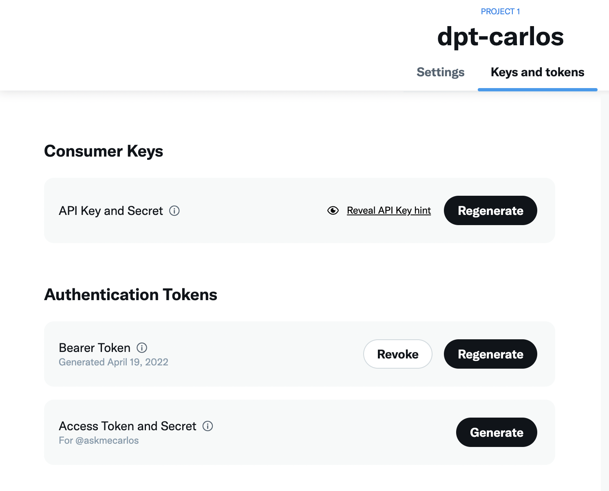
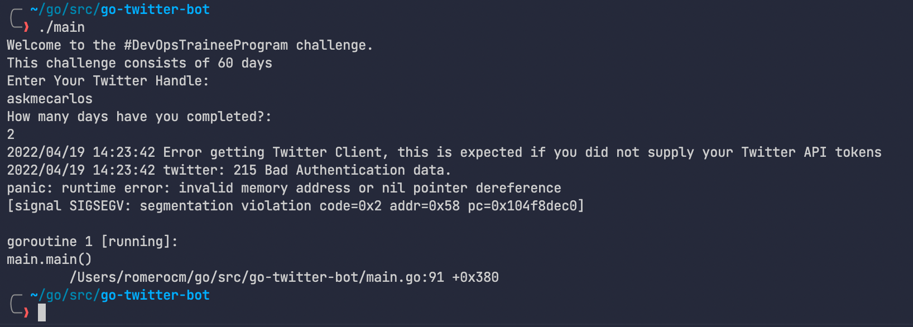
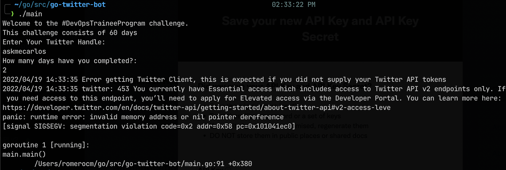

Tweet your progress with our new App
As we are nearing to our last section, we must highlight that we have only just touched the surface here and it is just the start that might get you hooked or interested and excited. Maybe it is your beginning to wanting to dive more into Go.
So far, we have taken a small idea for an application and we have added functionality to it. In this session we want to take advantage of those packages we mentioned earlier and create the functionality for our app to not only give you the update of your progress on screen but also send a tweet with the details of the challenge and your status.
Adding the ability to tweet your progress
The first thing we need to do is set up our developer API access with Twitter for this to work.
Head to the Twitter Developer Platform and sign in with your Twitter handle and details and make sure to sign up for your access for twitter developer dashboard. Once in you should see something like the screenshot below. Make sure to use the name dpt-yourname as your app name to ensure it is unique.

From here you may also want to request elevated access, this might take some time but generally it shouldn't take too long.
Next, we should select Projects & Apps and create our App. Limits are depending on the account access you have, with essential you only have one app and one project which is enough however with elevated you can have a total of 3 apps. For now, one app is enough for this case scenario.
Note:
You will be then given API tokens, it is important that you save these somewhere secure. (I have since deleted this app) We will need these later with our Go Application.
Now that we have our app created, make sure that they're unique to you. 
The keys that we gathered before are known as our consumer keys and we will also need our access token and secrets. We can gather this information using the "Keys & Tokens" tab.

Okay, we are done in the Twitter developer portal for now. Make sure you keep your keys safe because we will need them later.
Go Twitter Bot
Remember the code we are starting within our application as well:
package main
import "fmt"
func main() {
const DaysTotal int = 60
var remainingDays uint = 60
challenge := "#DevOpsTraineeProgram"
fmt.Printf("Welcome to the %v challenge.\nThis challenge consists of %v days\n", challenge, DaysTotal)
var TwitterName string
var DaysCompleted uint
// asking for user input
fmt.Println("Enter Your Twitter Handle: ")
fmt.Scanln(&TwitterName)
fmt.Println("How many days have you completed?: ")
fmt.Scanln(&DaysCompleted)
// calculate remaining days
remainingDays = remainingDays - DaysCompleted
fmt.Printf("Thank you %v for taking part and completing %v days.\n", TwitterName, DaysCompleted)
fmt.Printf("You have %v days remaining for the %v challenge\n", remainingDays, challenge)
fmt.Println("Good luck")
}
but first, we need to check we have the correct code to make something tweet.
We need to think about the code to get our output or message to Twitter in the form of a tweet. We are going to be using go-twitter This is a Go client library for the Twitter API.
To test this before putting this into our main application, we have created a new directory in our src folder called go-twitter-bot, issued the go mod init github.com/michaelcade/go-twitter-bot on the folder which then created a go.mod file and then we can start writing our new main.go and test this out.
Additionally we will need to add the following packages:
go get package github.com/dghubble/go-twitter/twitter
go get package github.com/dghubble/oauth1
We now need those keys, tokens and secrets we gathered from the Twitter developer portal. We are going to set these in our environment variables. This will depend on the OS you are running:
Windows
set CONSUMER_KEY
set CONSUMER_SECRET
set ACCESS_TOKEN
set ACCESS_TOKEN_SECRET
Linux / macOS
export CONSUMER_KEY
export CONSUMER_SECRET
export ACCESS_TOKEN
export ACCESS_TOKEN_SECRET
At this stage, you can take a look at the following code but you will see here that we are using a struct to define our keys, secrets and tokens.
We then have a func to parse those credentials and make that connection to the Twitter API
Then based on the success we will then send a tweet.
package main
import (
// other imports
"fmt"
"log"
"os"
"github.com/dghubble/go-twitter/twitter"
"github.com/dghubble/oauth1"
)
// Credentials stores all of our access/consumer tokens
// and secret keys needed for authentication against
// the twitter REST API.
type Credentials struct {
ConsumerKey string
ConsumerSecret string
AccessToken string
AccessTokenSecret string
}
// getClient is a helper function that will return a twitter client
// that we can subsequently use to send tweets, or to stream new tweets
// this will take in a pointer to a Credential struct which will contain
// everything needed to authenticate and return a pointer to a twitter Client
// or an error
func getClient(creds *Credentials) (*twitter.Client, error) {
// Pass in your consumer key (API Key) and your Consumer Secret (API Secret)
config := oauth1.NewConfig(creds.ConsumerKey, creds.ConsumerSecret)
// Pass in your Access Token and your Access Token Secret
token := oauth1.NewToken(creds.AccessToken, creds.AccessTokenSecret)
httpClient := config.Client(oauth1.NoContext, token)
client := twitter.NewClient(httpClient)
// Verify Credentials
verifyParams := &twitter.AccountVerifyParams{
SkipStatus: twitter.Bool(true),
IncludeEmail: twitter.Bool(true),
}
// we can retrieve the user and verify if the credentials
// we have used successfully allow us to log in!
user, _, err := client.Accounts.VerifyCredentials(verifyParams)
if err != nil {
return nil, err
}
log.Printf("User's ACCOUNT:\n%+v\n", user)
return client, nil
}
func main() {
fmt.Println("Go-Twitter Bot v0.01")
creds := Credentials{
AccessToken: os.Getenv("ACCESS_TOKEN"),
AccessTokenSecret: os.Getenv("ACCESS_TOKEN_SECRET"),
ConsumerKey: os.Getenv("CONSUMER_KEY"),`
ConsumerSecret: os.Getenv("CONSUMER_SECRET"),
}
client, err := getClient(&creds)
if err != nil {
log.Println("Error getting Twitter Client")
log.Println(err)
}
tweet, resp, err := client.Statuses.Update("A Test Tweet from the future, testing a #DevOpsTraineeProgram Program that tweets, tweet tweet", nil)
if err != nil {
log.Println(err)
}
log.Printf("%+v\n", resp)
log.Printf("%+v\n", tweet)
}
The above will either give you an error based on what is happening or it will succeed and you will have a tweet sent with the message outlined in the code.
Pairing the two together - Go-Twitter-Bot + Our App
Now we need to merge these two in our main.go. We can definitely improve this in the future as we build our .go files in our project but for now this will make sense.
You can see the merged codebase here but I will also show it below.
package main
import (
// other imports
"fmt"
"log"
"os"
"github.com/dghubble/go-twitter/twitter"
"github.com/dghubble/oauth1"
)
// Credentials stores all of our access/consumer tokens
// and secret keys needed for authentication against
// the twitter REST API.
type Credentials struct {
ConsumerKey string
ConsumerSecret string
AccessToken string
AccessTokenSecret string
}
// getClient is a helper function that will return a twitter client
// that we can subsequently use to send tweets, or to stream new tweets
// this will take in a pointer to a Credential struct which will contain
// everything needed to authenticate and return a pointer to a twitter Client
// or an error
func getClient(creds *Credentials) (*twitter.Client, error) {
// Pass in your consumer key (API Key) and your Consumer Secret (API Secret)
config := oauth1.NewConfig(creds.ConsumerKey, creds.ConsumerSecret)
// Pass in your Access Token and your Access Token Secret
token := oauth1.NewToken(creds.AccessToken, creds.AccessTokenSecret)
httpClient := config.Client(oauth1.NoContext, token)
client := twitter.NewClient(httpClient)
// Verify Credentials
verifyParams := &twitter.AccountVerifyParams{
SkipStatus: twitter.Bool(true),
IncludeEmail: twitter.Bool(true),
}
// we can retrieve the user and verify if the credentials
// we have used successfully allow us to log in!
user, _, err := client.Accounts.VerifyCredentials(verifyParams)
if err != nil {
return nil, err
}
log.Printf("User's ACCOUNT:\n%+v\n", user)
return client, nil
}
func main() {
creds := Credentials{
AccessToken: os.Getenv("ACCESS_TOKEN"),
AccessTokenSecret: os.Getenv("ACCESS_TOKEN_SECRET"),
ConsumerKey: os.Getenv("CONSUMER_KEY"),
ConsumerSecret: os.Getenv("CONSUMER_SECRET"),
}
{
const DaysTotal int = 60
var remainingDays uint = 60
challenge := "#DevOpsTraineeProgram"
fmt.Printf("Welcome to the %v challenge.\nThis challenge consists of %v days\n", challenge, DaysTotal)
var TwitterName string
var DaysCompleted uint
// asking for user input
fmt.Println("Enter Your Twitter Handle: ")
fmt.Scanln(&TwitterName)
fmt.Println("How many days have you completed?: ")
fmt.Scanln(&DaysCompleted)
// calculate remaining days
remainingDays = remainingDays - DaysCompleted
//fmt.Printf("Thank you %v for taking part and completing %v days.\n", TwitterName, DaysCompleted)
//fmt.Printf("You have %v days remaining for the %v challenge\n", remainingDays, challenge)
// fmt.Println("Good luck")
client, err := getClient(&creds)
if err != nil {
log.Println("Error getting Twitter Client, this is expected if you did not supply your Twitter API tokens")
log.Println(err)
}
message := fmt.Sprintf("Hey I am %v I have been doing the %v for %v days and I have %v Days left", TwitterName, challenge, DaysCompleted, remainingDays)
tweet, resp, err := client.Statuses.Update(message, nil)
if err != nil {
log.Println(err)
}
log.Printf("%+v\n", resp)
log.Printf("%+v\n", tweet)
}
}
Note
The outcome of this should be a tweet but if you did not supply your environment variables then you should get an error like the one below.

You also need to apply for elevated access, otherwise you'll get the following error message when you are trying to send your tweet:

Once you have fixed that, the resulting tweet should look something like this:

How to compile for multiple OSs
I next want to cover the question, "How do you compile for multiple Operating Systems?" The great thing about Go is that it can easily compile for many different Operating Systems. You can get a full list by running the following command:
go tool dist list
Using our go build commands so far is great and it will use the GOOS and GOARCH environment variables to determine the host machine and what the build should be built for. But we can also create other binaries by using the code below as an example.
GOARCH=amd64 GOOS=darwin go build -o ${BINARY_NAME}_0.1_darwin main.go
GOARCH=amd64 GOOS=linux go build -o ${BINARY_NAME}_0.1_linux main.go
GOARCH=amd64 GOOS=windows go build -o ${BINARY_NAME}_0.1_windows main.go
GOARCH=arm64 GOOS=linux go build -o ${BINARY_NAME}_0.1_linux_arm64 main.go
GOARCH=arm64 GOOS=darwin go build -o ${BINARY_NAME}_0.1_darwin_arm64 main.go
This will then give you binaries in your directory for all of the above platforms. You can then take this and create a makefile to build these binaries whenever you add new features and functionality to your code. I have included the makefile
This is what I have used to create the releases you can now see on the repository
Resources
- StackOverflow 2021 Developer Survey
- Why we are choosing Golang to learn
- Jake Wright - Learn Go in 12 minutes
- Techworld with Nana - Golang full course - 3 hours 24 mins
- NOT FREE Nigel Poulton Pluralsight - Go Fundamentals - 3 hours 26 mins
- FreeCodeCamp - Learn Go Programming - Golang Tutorial for Beginners
- Hitesh Choudhary - Complete playlist
- A great repo full of all things DevOps & exercises
- GoByExample - Example based learning
- go.dev/tour/list
- go.dev/learn
This wraps up the Programming language for now! So much more that can be covered and I hope you have been able to continue through the content above and be able to understand some of the other aspects of the Go programming language.
Next, we take our focus into Linux and some of the fundamentals that we should all know here.
See you in the Next Section.